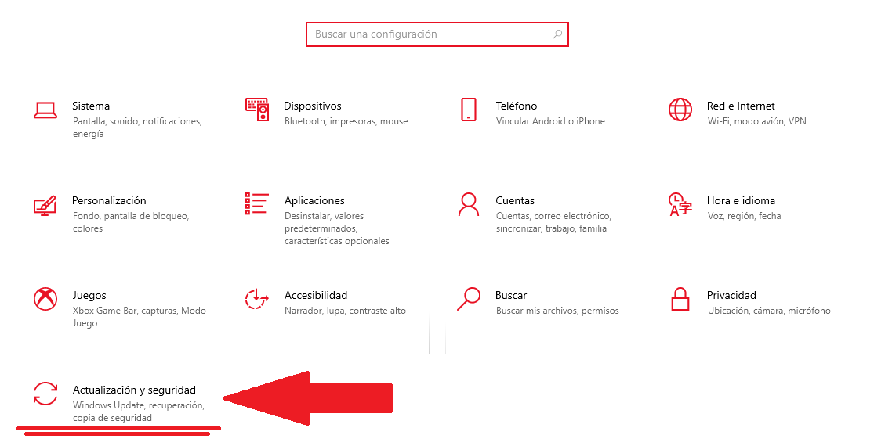
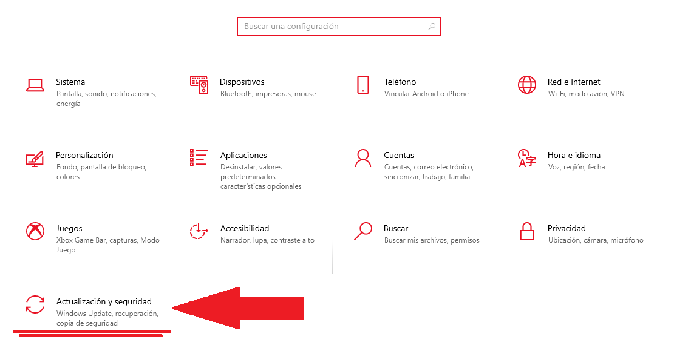

En que me ayuda esta Herramienta
Al momento de que el equipo tenga algun problema y sea necesario formatear el quipo no perder nuestra información.
Solo hay que activar esta opción y el sistema hara puntos de restauración por si se da algún inconveniente y perdemos nuestra información.

Estas Capturas mostradas son de como se ve el proceso de realizacionde los puntos de rtestauración una ves acabado el proceso de restauración aremos click en restarurar esto reiniciara el computador haciedno que este quede restaurado asi evitamos fallas a futuro.
 
